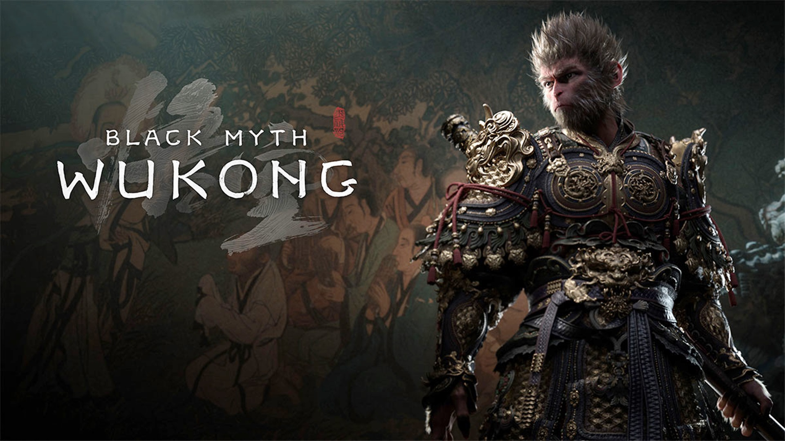
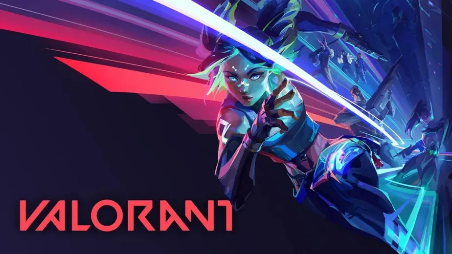

Black Myth: Wukong finalmente lançado
Revelado há pouco mais de três anos, o soulslike chinês Black Myth: Wukong não é um delírio coletivo, já que, finalmente, ganhou uma data de lançamento: 20 de agosto de 2024.
O novo trailer revelado durante o The Game Awards na noite de ontem (7) mostra um pouco da história, as criaturas bizarras, paisagens belíssimas e, claro, os combates de Black Myth: Wukong, que são o destaque de um soulslike.
Ler mais

VALORANT: Atualização 9.02 traz mecânica e habilidades novas
A atualização 9.02 do VALORANT traz melhorias significativas, como novas punições para comportamento inadequado, correções em bugs de agentes e mapas, atualização no Relatório de Combate, novo Treinamento Básico, e Icebox disponível nos modos Competitivo e Sem Classificação.
Ler mais
Sony confirma evento para anunciar PS5 Pro
Depois de muitos rumores e vazamentos, a Sony finalmente anunciou o evento PlayStation 5 Technical Presentation, que irá acontecer nesta terça (10). Como é de se esperar, o evento deve servir como a revelação oficial no PS5 Pro, novo console de meio de geração que promete trazer diversas melhorias para o desempenho dos jogos, incluindo uma tecnologia de geração de quadros proprietária para rivalizar com o DLSS da NVIDIA.
Ler mais